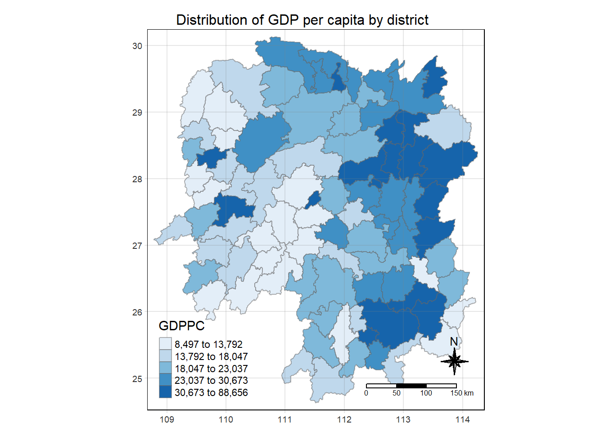
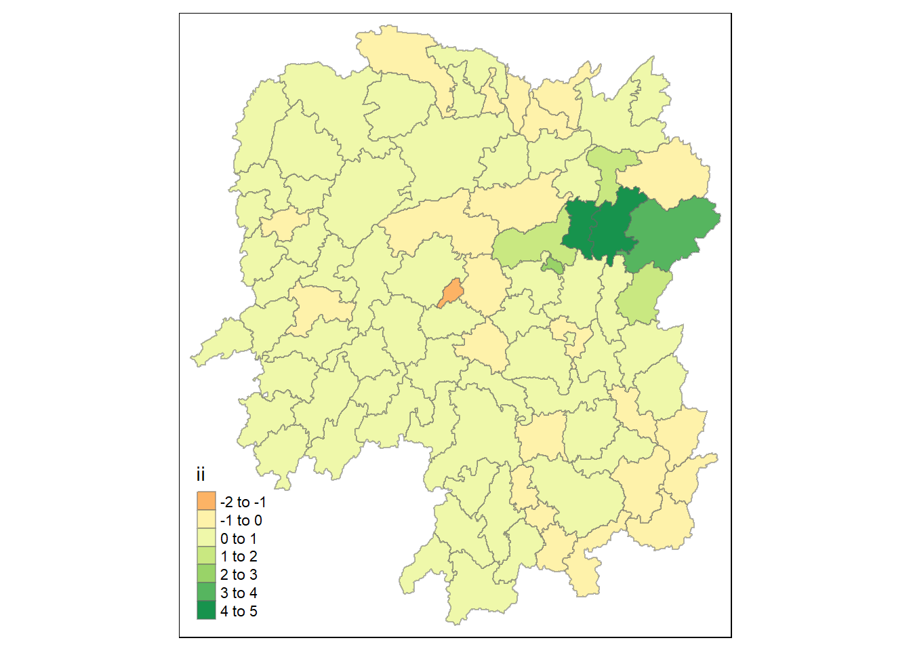
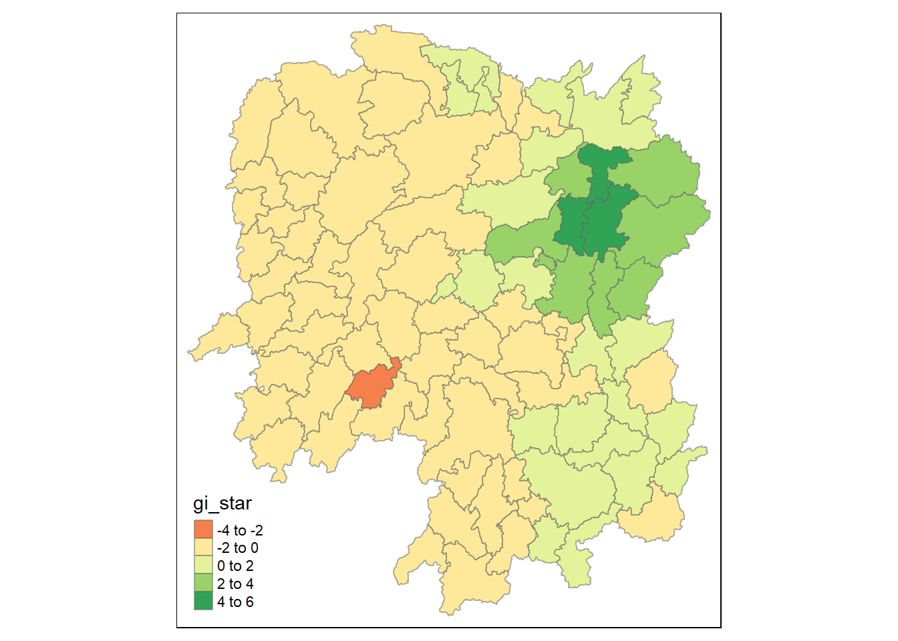
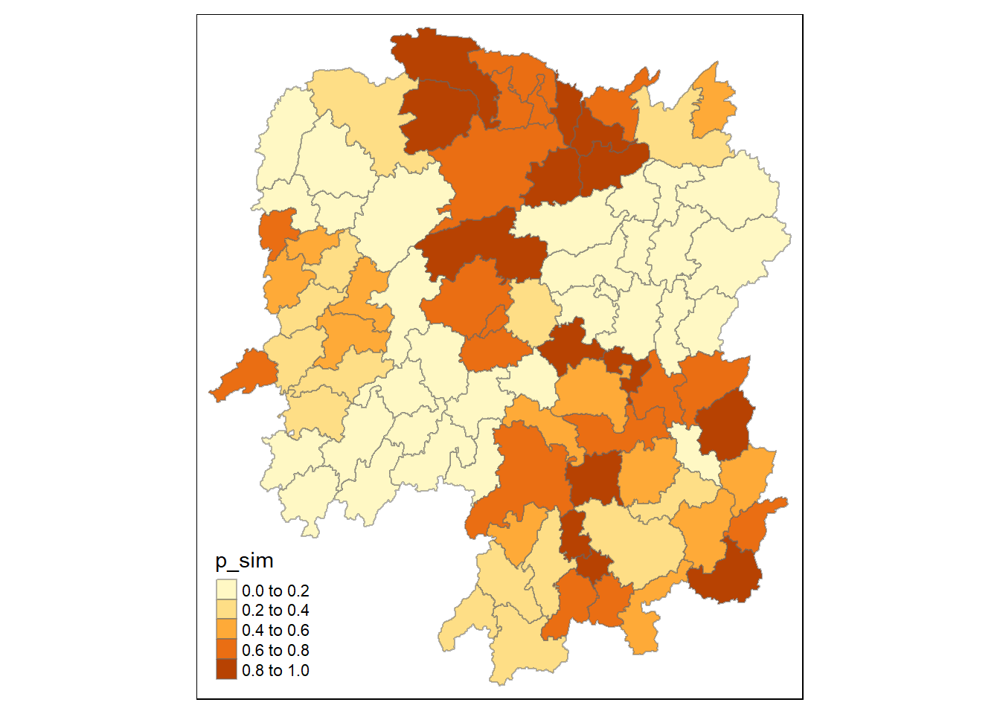

pacman::p_load(sf, sfdep, tmap, tidyverse, plotly, zoo, Kendall)In-class exercise 7
Imports
Import packages
Import data
Spatial data
hunan <- st_read(dsn = "data/geospatial",
layer = "Hunan")Reading layer `Hunan' from data source
`C:\Study\Y3\S2\IS415\ELAbishek\IS415-GAA\in-class-exercise\wk7\data\geospatial'
using driver `ESRI Shapefile'
Simple feature collection with 88 features and 7 fields
Geometry type: POLYGON
Dimension: XY
Bounding box: xmin: 108.7831 ymin: 24.6342 xmax: 114.2544 ymax: 30.12812
Geodetic CRS: WGS 84Aspatial data
hunan2012 <- read_csv("data/aspatial/Hunan_2012.csv")GDPPC <- read_csv("data/aspatial/Hunan_GDPPC.csv")
GDPPC_st = spacetime(GDPPC, hunan, .loc_col = "County", .time_col = "Year")Performing relation join
hunan_GDPPC <- left_join(hunan,hunan2012)%>%
select(1:4, 7, 15)Plotting Chloropleth map
tmap_mode('plot')
tm_shape(hunan_GDPPC)+
tm_fill("GDPPC",
style = "quantile",
palette = "Blues",
title = "GDPPC")+
tm_layout(main.title = "Distribution of GDP per capita by district",
main.title.position = "center",
main.title.size = 1.0,
legend.height = 0.45,
legend.width = 0.35,
frame = TRUE) +
tm_borders(alpha = 0.5) +
tm_compass(type = "8star", size = 2) +
tm_scale_bar() +
tm_grid(alpha = 0.2)
Global measures of spatial association
Derive row standardised weights metric
wm_q <- hunan_GDPPC %>%
mutate(nb = st_contiguity(geometry),
wt = st_weights(nb),
.before = 1)Global measures of spatial association
Computing global moransI
moranI <- global_moran(wm_q$GDPPC,
wm_q$nb,
wm_q$wt)Performing Global Morans I test
global_moran_test(wm_q$GDPPC,
wm_q$nb,
wm_q$wt)
Moran I test under randomisation
data: x
weights: listw
Moran I statistic standard deviate = 4.7351, p-value = 1.095e-06
alternative hypothesis: greater
sample estimates:
Moran I statistic Expectation Variance
0.300749970 -0.011494253 0.004348351 Performing Global Moran I permutation test
set.seed(1234)
global_moran_perm(wm_q$GDPPC,
wm_q$nb,
wm_q$wt,
nsim = 99)
Monte-Carlo simulation of Moran I
data: x
weights: listw
number of simulations + 1: 100
statistic = 0.30075, observed rank = 100, p-value < 2.2e-16
alternative hypothesis: two.sidedComputing local Morans I
lisa <- wm_q %>%
mutate(local_moran = local_moran(
GDPPC, nb, wt, nsim = 99),
.before = 1) %>%
unnest(local_moran)
lisa #auto gives lowlow high high high low, no need to manually label itSimple feature collection with 88 features and 20 fields
Geometry type: POLYGON
Dimension: XY
Bounding box: xmin: 108.7831 ymin: 24.6342 xmax: 114.2544 ymax: 30.12812
Geodetic CRS: WGS 84
# A tibble: 88 × 21
ii eii var_ii z_ii p_ii p_ii_…¹ p_fol…² skewn…³ kurtosis
<dbl> <dbl> <dbl> <dbl> <dbl> <dbl> <dbl> <dbl> <dbl>
1 -0.00147 0.00177 4.18e-4 -0.158 0.874 0.82 0.41 -0.812 0.652
2 0.0259 0.00641 1.05e-2 0.190 0.849 0.96 0.48 -1.09 1.89
3 -0.0120 -0.0374 1.02e-1 0.0796 0.937 0.76 0.38 0.824 0.0461
4 0.00102 -0.0000349 4.37e-6 0.506 0.613 0.64 0.32 1.04 1.61
5 0.0148 -0.00340 1.65e-3 0.449 0.654 0.5 0.25 1.64 3.96
6 -0.0388 -0.00339 5.45e-3 -0.480 0.631 0.82 0.41 0.614 -0.264
7 3.37 -0.198 1.41e+0 3.00 0.00266 0.08 0.04 1.46 2.74
8 1.56 -0.265 8.04e-1 2.04 0.0417 0.08 0.04 0.459 -0.519
9 4.42 0.0450 1.79e+0 3.27 0.00108 0.02 0.01 0.746 -0.00582
10 -0.399 -0.0505 8.59e-2 -1.19 0.234 0.28 0.14 -0.685 0.134
# … with 78 more rows, 12 more variables: mean <fct>, median <fct>,
# pysal <fct>, nb <nb>, wt <list>, NAME_2 <chr>, ID_3 <int>, NAME_3 <chr>,
# ENGTYPE_3 <chr>, County <chr>, GDPPC <dbl>, geometry <POLYGON [°]>, and
# abbreviated variable names ¹p_ii_sim, ²p_folded_sim, ³skewnessVisualizing local Moran I
tmap_mode("plot")
tm_shape(lisa) +
tm_fill("ii") +
tm_borders(alpha = 0.5) +
tm_view(set.zoom.limits = c(6,8))
#p_ii_sim for ones with many simulations
tm_shape(lisa) +
tm_fill("p_ii_sim") +
tm_borders(alpha = 0.5) +
tm_view(set.zoom.limits = c(6,8))
lisa_sig <- lisa %>%
filter(p_ii_sim < 0.05)
tm_shape(lisa) +
tm_polygons() +
tm_borders(alpha = 0.5) +
tm_shape(lisa_sig) +
tm_fill("mean") +
tm_borders(alpha = 0.4) 
Computing Gi*
HCSA <- wm_q %>%
mutate(local_Gi = local_gstar_perm(
GDPPC, nb, wt, nsim = 99),
.before = 1) %>%
unnest(local_Gi)
HCSASimple feature collection with 88 features and 16 fields
Geometry type: POLYGON
Dimension: XY
Bounding box: xmin: 108.7831 ymin: 24.6342 xmax: 114.2544 ymax: 30.12812
Geodetic CRS: WGS 84
# A tibble: 88 × 17
gi_star e_gi var_gi p_value p_sim p_fol…¹ skewn…² kurto…³ nb wt
<dbl> <dbl> <dbl> <dbl> <dbl> <dbl> <dbl> <dbl> <nb> <lis>
1 -0.00567 0.0115 0.00000812 9.95e-1 0.82 0.41 1.03 1.23 <int> <dbl>
2 -0.235 0.0110 0.00000581 8.14e-1 1 0.5 0.912 1.05 <int> <dbl>
3 0.298 0.0114 0.00000776 7.65e-1 0.7 0.35 0.455 -0.732 <int> <dbl>
4 0.145 0.0121 0.0000111 8.84e-1 0.64 0.32 0.900 0.726 <int> <dbl>
5 0.356 0.0113 0.0000119 7.21e-1 0.64 0.32 1.08 1.31 <int> <dbl>
6 -0.480 0.0116 0.00000706 6.31e-1 0.82 0.41 0.364 -0.676 <int> <dbl>
7 3.66 0.0116 0.00000825 2.47e-4 0.02 0.01 0.909 0.664 <int> <dbl>
8 2.14 0.0116 0.00000714 3.26e-2 0.16 0.08 1.13 1.48 <int> <dbl>
9 4.55 0.0113 0.00000656 5.28e-6 0.02 0.01 1.36 4.14 <int> <dbl>
10 1.61 0.0109 0.00000341 1.08e-1 0.18 0.09 0.269 -0.396 <int> <dbl>
# … with 78 more rows, 7 more variables: NAME_2 <chr>, ID_3 <int>,
# NAME_3 <chr>, ENGTYPE_3 <chr>, County <chr>, GDPPC <dbl>,
# geometry <POLYGON [°]>, and abbreviated variable names ¹p_folded_sim,
# ²skewness, ³kurtosisVisualizing Gi*
tm_shape(HCSA)+
tm_fill("gi_star")+
tm_borders(alpha = 0.5)+
tm_view(set.zoom.limits = c(6,8))
Visualizing p value of HCSA
tm_shape(HCSA)+
tm_fill("p_sim")+
tm_borders(alpha = 0.5)
Creating time cube series
GDPPC_nb <- GDPPC_st %>%
activate("geometry") %>%
mutate(
nb = include_self(st_contiguity(geometry)),
wt = st_weights(nb)
)%>%
set_nbs("nb") %>%
set_wts("wt")Computing Gi*
gi_stars <- GDPPC_nb %>%
group_by(Year) %>%
mutate(gi_star = local_gstar_perm(GDPPC, nb, wt, nsim=99),
.before = 1) %>%
unnest(gi_star)Mann-Kendall test
cbg <- gi_stars %>%
ungroup() %>%
filter(County == "Changsha") %>%
select(County, Year, gi_star)Arrange to show significant weights
ehsa <- emerging_hotspot_analysis(
GDPPC_st,
.var = "GDPPC",
k = 1,
nsim = 99
)